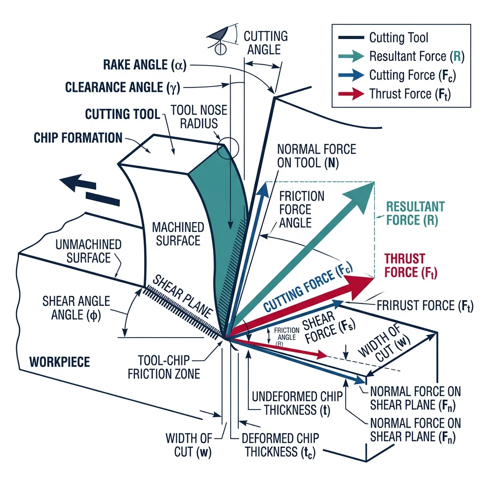
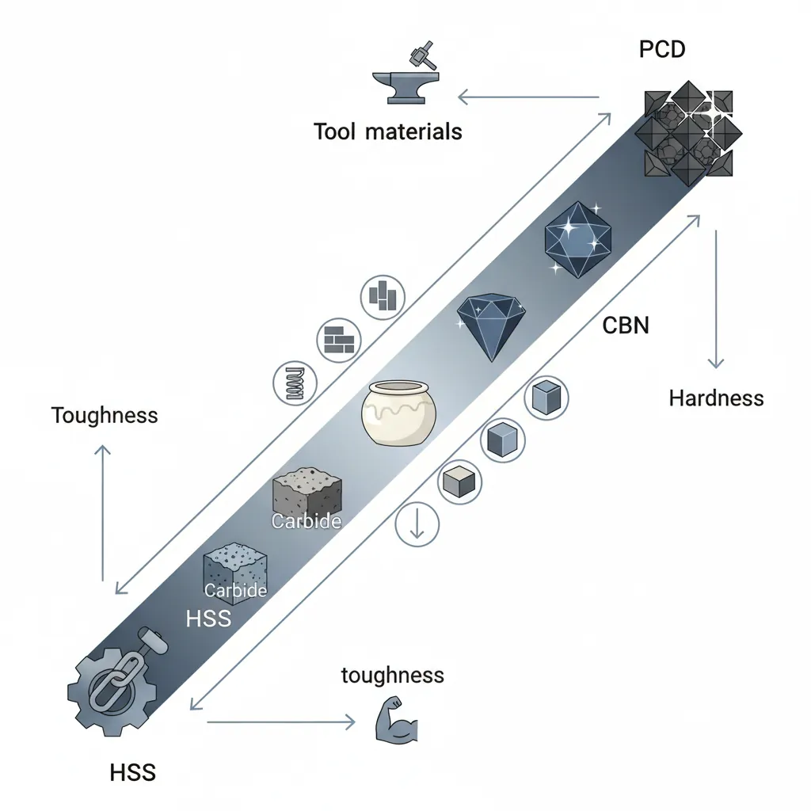
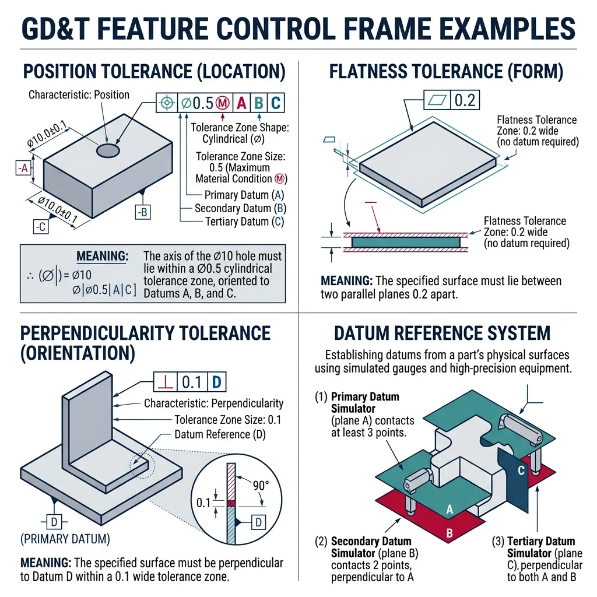
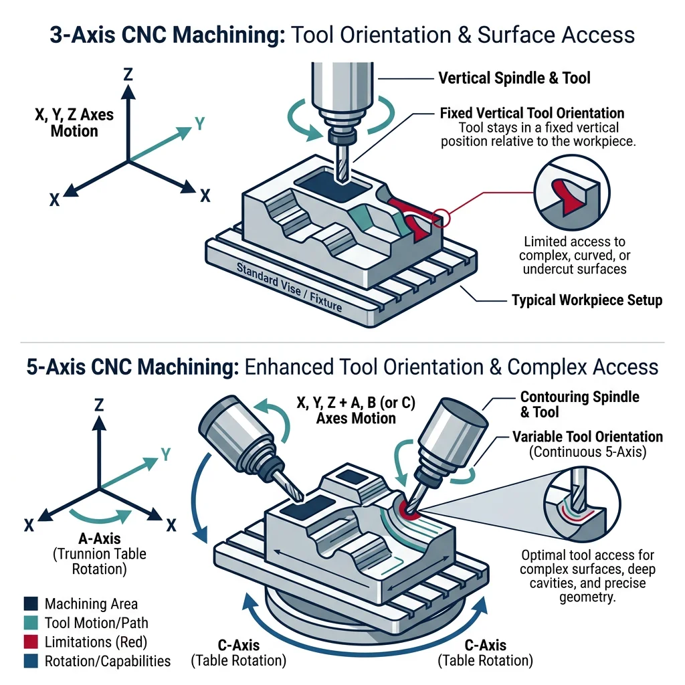
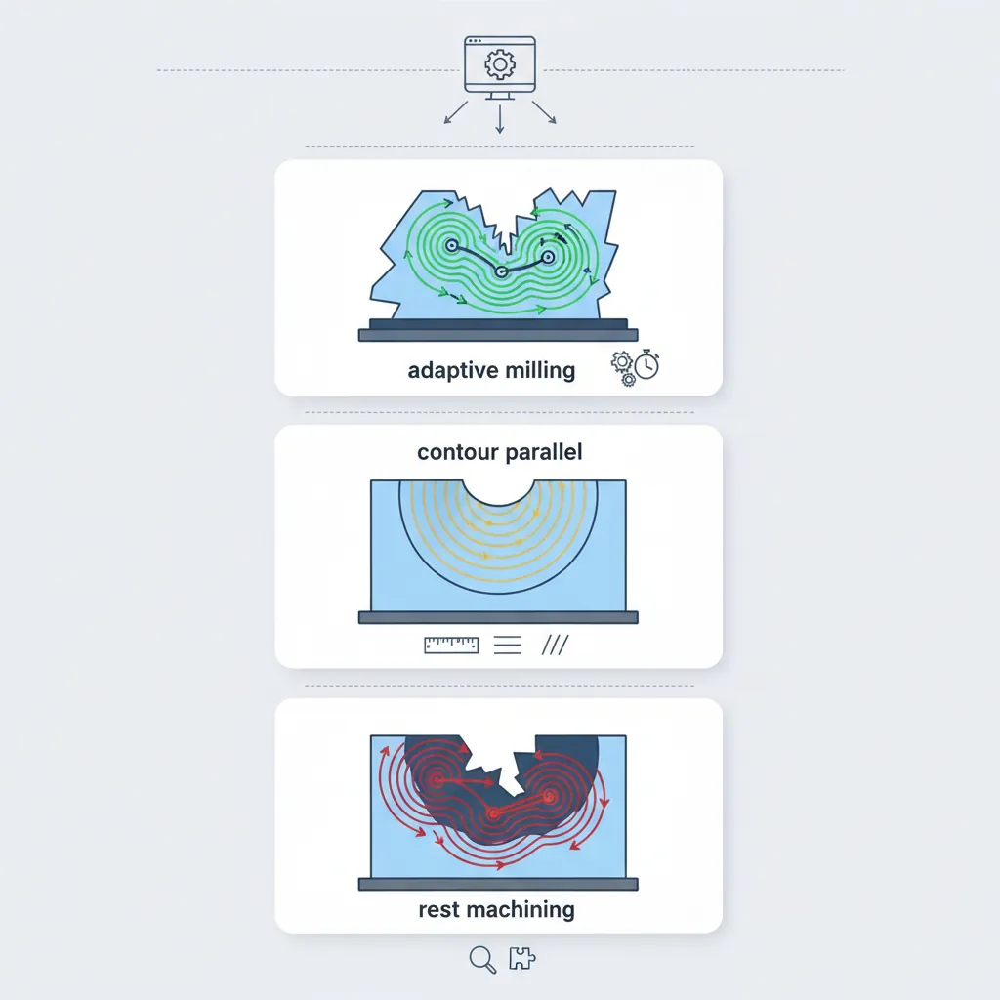

Cutting Mechanics & Chip Formation
Manufacturing Mastery
Manufacturing Systems & Process Foundations
Process taxonomy, physics, DFM/DFA, production economics, Theory of ConstraintsCasting, Forging & Metal Forming
Sand/investment/die casting, open/closed-die forging, rolling, extrusion, deep drawingMachining & CNC Technology
Cutting mechanics, tool materials, GD&T, multi-axis machining, high-speed machining, CAMWelding, Joining & Assembly
Arc/MIG/TIG/laser/friction stir welding, brazing, adhesive bonding, weld metallurgyAdditive Manufacturing & Hybrid Processes
PBF, DED, binder jetting, topology optimization, in-situ monitoringQuality Control, Metrology & Inspection
SPC, control charts, CMM, NDT, surface metrology, reliabilityLean Manufacturing & Operational Excellence
5S, Kaizen, VSM, JIT, Kanban, Six Sigma, OEEManufacturing Automation & Robotics
Industrial robotics, PLC, sensors, cobots, vision systems, safetyIndustry 4.0 & Smart Factories
CPS, IIoT, digital twins, predictive maintenance, MES, cloud manufacturingManufacturing Economics & Strategy
Cost modeling, capital investment, facility layout, global supply chainsSustainability & Green Manufacturing
LCA, circular economy, energy efficiency, carbon footprint reductionAdvanced & Frontier Manufacturing
Nano-manufacturing, semiconductor fabrication, bio-manufacturing, autonomous systemsMachining is the most versatile manufacturing process — virtually any material can be machined, virtually any geometry can be produced, and tolerances of ±0.001mm are achievable. Globally, machining accounts for ~$300 billion annually and is the final step for over 80% of precision-engineered components.

Orthogonal cutting is the simplified 2D model where the cutting edge is perpendicular to the cutting direction. While real machining is almost always oblique (3D), the orthogonal model captures the fundamental physics and is essential for understanding chip formation mechanics.
| Parameter | Definition | Typical Range | Effect on Process |
|---|---|---|---|
| Rake angle (α) | Angle between tool face and workpiece surface normal | -10° to +30° | Positive → lower forces, better finish; Negative → stronger tool edge |
| Clearance angle (γ) | Angle between tool flank and machined surface | 5° to 15° | Prevents rubbing; too large weakens tool |
| Shear angle (φ) | Angle of the shear plane (where deformation occurs) | 10° to 35° | Larger → thinner chip, lower forces, better finish |
| Cutting speed (V) | Surface speed at tool-workpiece interface | 30–500 m/min | Higher speed → higher temperature → faster wear but better finish |
| Feed rate (f) | Distance tool advances per revolution | 0.05–0.5 mm/rev | Higher feed → rougher surface, higher force, faster MRR |
| Depth of cut (d) | Material thickness removed per pass | 0.1–10 mm | Higher → more force, higher MRR, possible chatter |
Chip Formation Theory
Chips are classified into four types based on material ductility, cutting conditions, and tool geometry:
Type 1: Continuous Chip
Long, ribbon-like chip from ductile materials (aluminum, mild steel) with sharp tools, high speed, and positive rake. Produces excellent surface finish. Danger: Entanglement with spindle — chip breakers essential.
Type 2: Continuous with BUE
A Built-Up Edge forms when workpiece material welds to the tool at low speeds. BUE periodically breaks off, roughening the surface and embedding fragments. Fix: Increase cutting speed or use coated tools.
Type 3: Segmented (Shear-Localized)
Saw-tooth chip from difficult-to-machine materials (titanium, Inconel). Caused by adiabatic shear bands — material softens locally from heat, creating alternating regions of high and low deformation. Causes cyclical cutting forces and potential chatter.
Type 4: Discontinuous Chip
Short, fragment chips from brittle materials (cast iron, brass, ceramics) or ductile materials at very low speed with negative rake. Easy chip disposal, acceptable surface finish. Preferred in CNC automation.
Cutting Forces & Power
Merchant's Circle is the foundational force diagram for orthogonal cutting. It resolves forces into cutting force (Fc), thrust force (Ft), shear force (Fs), normal force to shear plane (Fn), friction force (F), and normal force to tool face (N).
import numpy as np
# Merchant's Circle - Cutting Force Analysis
# Given parameters
alpha = np.radians(10) # Rake angle (degrees)
phi = np.radians(25) # Shear angle (degrees)
tau_s = 350 # Shear strength of material (MPa)
w = 3.0 # Width of cut (mm)
t1 = 0.25 # Uncut chip thickness (mm)
# Shear plane area
A_s = (w * t1) / np.sin(phi)
# Shear force
F_s = tau_s * A_s # N
# Friction angle beta from Merchant's equation: 2*phi + beta - alpha = pi/2
beta = np.pi/2 - 2*phi + alpha # Merchant's minimum energy condition
# Cutting force (Fc) and Thrust force (Ft) from Merchant's circle
F_c = F_s * np.cos(beta - alpha) / np.cos(phi + beta - alpha)
F_t = F_s * np.sin(beta - alpha) / np.cos(phi + beta - alpha)
# Friction coefficient
mu = np.tan(beta)
# Specific cutting energy
k_c = F_c / (w * t1)
# Power calculation
V = 200 # Cutting speed (m/min)
P = F_c * V / (60 * 1000) # kW
# Chip thickness ratio
r = t1 / (t1 * np.cos(alpha) / np.sin(phi) + t1 * np.sin(alpha) * np.cos(alpha) / np.sin(phi))
print("Merchant's Circle — Cutting Force Analysis")
print("=" * 55)
print(f"Material shear strength: {tau_s} MPa")
print(f"Rake angle: {np.degrees(alpha):.1f}°")
print(f"Shear angle: {np.degrees(phi):.1f}°")
print(f"Friction angle (β): {np.degrees(beta):.1f}°")
print(f"Friction coefficient (μ): {mu:.3f}")
print(f"\nShear plane area: {A_s:.2f} mm²")
print(f"Shear force (Fs): {F_s:.0f} N")
print(f"Cutting force (Fc): {F_c:.0f} N")
print(f"Thrust force (Ft): {F_t:.0f} N")
print(f"Resultant force: {np.sqrt(F_c**2 + F_t**2):.0f} N")
print(f"\nSpecific cutting energy: {k_c:.0f} MPa")
print(f"Cutting power @ {V} m/min: {P:.2f} kW")
Tool Materials, Wear & Coatings
Tool material selection is a balancing act between hardness (wear resistance) and toughness (fracture resistance). Harder tools maintain their edge longer and cut faster, but they're brittle and prone to chipping. Tougher tools survive interrupted cuts and shock loads, but they wear quickly at high speeds.

| Tool Material | Hardness (HV) | Max Temp (°C) | Speed Range (m/min) | Best For |
|---|---|---|---|---|
| HSS (M2, M42) | 700–900 | 600 | 20–80 | Drills, taps, complex-geometry cutters, manual machines |
| Cemented Carbide (WC-Co) | 1,300–1,800 | 800 | 80–400 | General-purpose turning, milling, drilling (most common CNC tooling) |
| Cermet (TiC-Ni) | 1,500–2,000 | 900 | 150–350 | Finish machining of steel, excellent surface finish |
| Ceramic (Al₂O₃, Si₃N₄) | 2,000–2,500 | 1,200 | 200–1,000 | High-speed finishing of cast iron, hardened steel, superalloys |
| CBN (Cubic Boron Nitride) | 4,000–5,000 | 1,300 | 100–300 | Hard turning (>45 HRC), case-hardened gears, bearing races |
| PCD (Polycrystalline Diamond) | 6,000–10,000 | 700 | 300–5,000 | Aluminum, composites (CFRP), wood, non-ferrous (NOT steel — diamond reacts with iron) |
Tool Wear Mechanisms & Taylor's Equation
Every cutting tool eventually fails. Understanding how tools wear is critical for predicting tool life, scheduling replacements, and optimizing machining economics.
| Wear Mechanism | Cause | Appearance | Mitigation |
|---|---|---|---|
| Flank wear (VB) | Abrasion of tool flank against machined surface | Uniform land on flank face | Harder tool, coatings, reduce speed |
| Crater wear (KT) | Chemical diffusion at high temperature on rake face | Concave depression on rake face | Al₂O₃ coating, reduce speed, coolant |
| Notch wear | Oxidation + abrasion at depth-of-cut line | Groove at DOC boundary | Variable DOC, ceramic tools, coatings |
| Chipping / Fracture | Mechanical impact, interrupted cuts | Broken edge fragments | Tougher grade, negative rake, chamfered edge |
| Thermal cracking | Cyclic heating/cooling (milling) | Comb cracks perpendicular to edge | Dry cutting (no coolant in milling), tough grade |
import numpy as np
# Taylor's Tool Life Equation: V * T^n = C
# Extended Taylor: V * T^n * f^a * d^b = C_ext
# Taylor parameters for different tool/workpiece combinations
tools = {
"HSS on mild steel": {"n": 0.125, "C": 120},
"Carbide on mild steel": {"n": 0.25, "C": 400},
"Carbide on stainless": {"n": 0.20, "C": 200},
"Ceramic on cast iron": {"n": 0.50, "C": 800},
"CBN on hardened steel": {"n": 0.40, "C": 350},
}
print("Taylor's Tool Life Analysis")
print("=" * 75)
# Calculate tool life for various speeds
speeds = [100, 150, 200, 300, 400]
for name, params in tools.items():
n = params["n"]
C = params["C"]
print(f"\n{name} (n={n}, C={C}):")
print(f" {'Speed (m/min)':<15} {'Tool Life (min)':<18} {'Parts @ 2min/part':<20}")
print(f" {'-'*53}")
for V in speeds:
if V <= C:
T = (C / V) ** (1/n)
parts = T / 2
print(f" {V:<15} {T:<18.1f} {parts:<20.0f}")
else:
print(f" {V:<15} {'< 1 min':<18} {'N/A':<20}")
# Optimal cutting speed (minimum cost per part)
print(f"\n--- Economic Optimization ---")
C_tool = 15 # Tool + change cost ($)
C_machine = 60 # Machine hourly rate ($/hr)
t_c = 0.5 # Tool change time (min)
n = 0.25
C_taylor = 400
# V_opt = C / ((1/n - 1) * (C_tool / C_machine * 60 + t_c))^n
T_opt = (1/n - 1) * (C_tool / (C_machine/60) + t_c)
V_opt = C_taylor / T_opt**n
print(f"Tool cost: ${C_tool}/edge")
print(f"Machine rate: ${C_machine}/hour")
print(f"Optimal speed: {V_opt:.0f} m/min")
print(f"Optimal tool life: {T_opt:.1f} min")
PVD/CVD Coatings & Surface Engineering
Tool coatings extend tool life by 200-500% by adding thin (2-20 μm), extremely hard layers that reduce friction, resist diffusion, and act as thermal barriers. Two coating technologies dominate:
CVD Coatings (Chemical Vapor Deposition)
- Temperature: 900-1,050°C
- Thickness: 5-20 μm (multi-layer)
- Common layers: TiC → Al₂O₃ → TiN (inside-out)
- Advantages: Excellent adhesion, thick layers, multi-layer possible
- Limitations: High temperature weakens carbide substrate, residual tensile stress
- Best for: Turning inserts, heavy roughing
PVD Coatings (Physical Vapor Deposition)
- Temperature: 250-500°C
- Thickness: 2-6 μm (single or multi-layer)
- Common coatings: TiAlN, AlCrN, nanocomposite
- Advantages: Residual compressive stress (good for milling), sharp edges maintained
- Limitations: Thinner layers, moderate adhesion
- Best for: End mills, drills, milling inserts, HSS tools
Case Study: TiAlN Coating Revolution in Dry Machining
The development of TiAlN (titanium aluminum nitride) coatings enabled the shift from wet to dry machining in automotive production:
- Problem: Cutting fluids cost $7-15 per machined part (purchase, maintenance, disposal) — 15% of total manufacturing cost
- Solution: TiAlN forms a thin Al₂O₃ oxide layer at cutting temperatures (~800°C) that acts as a thermal barrier — the chip slides on a self-generating ceramic layer
- Result: Dry machining of cast iron (engine blocks, brake discs) at 400+ m/min with 3× tool life vs uncoated carbide with coolant
- Environmental impact: Eliminated 20,000+ liters of cutting fluid per CNC machine per year
Tolerancing, GD&T & Surface Finish
Tolerancing answers the fundamental manufacturing question: "How much variation is acceptable?" No part can be made to an exact dimension — every machining process introduces variability from tool wear, thermal expansion, machine deflection, and material inconsistency. Tolerancing quantifies these limits.

GD&T (Geometric Dimensioning & Tolerancing) extends traditional ±tolerancing by controlling the geometry of features — flatness, straightness, roundness, perpendicularity, position, and runout. GD&T uses datum references (A, B, C) to establish a coordinate system and feature control frames to specify allowable geometric variation.
| GD&T Symbol | Control Type | Description | Example Application |
|---|---|---|---|
| ⏤ | Flatness | All surface points within two parallel planes | Gasket sealing surfaces |
| ○ | Circularity | Cross-section within two concentric circles | Bearing bores, piston cylinders |
| ⊥ | Perpendicularity | Feature at 90° to datum within tolerance zone | Bolt hole to mounting face |
| ⊕ | Position (True) | Feature center within cylindrical tolerance zone at MMC/LMC | Bolt patterns, dowel holes |
| ↗ | Runout | Surface variation when rotated about datum axis | Shafts, spindles, gear journals |
| ◎ | Concentricity | Median points within cylinder about datum axis | Multi-diameter shafts |
Surface Roughness Prediction
Surface roughness is a critical functional property — it affects friction, wear, fatigue life, sealing, corrosion, and aesthetics. In turning, the theoretical surface roughness depends primarily on feed rate and tool nose radius:
import numpy as np
# Surface Roughness Prediction in Turning
# Ra_theoretical = f^2 / (32 * r)
# Parameters
feed_rates = [0.05, 0.08, 0.10, 0.15, 0.20, 0.30, 0.40] # mm/rev
nose_radius = [0.4, 0.8, 1.2, 1.6] # mm
print("Theoretical Surface Roughness Ra (μm) vs. Feed Rate and Nose Radius")
print("=" * 70)
# Header
header = f"{'Feed (mm/rev)':<15}"
for r in nose_radius:
header += f"r={r}mm{'':<8}"
print(header)
print("-" * 70)
for f in feed_rates:
row = f"{f:<15.2f}"
for r in nose_radius:
Ra = (f**2 / (32 * r)) * 1000 # Convert to μm
row += f"{Ra:<14.2f}"
print(row)
print(f"\nKey Insight: Halving the feed rate improves Ra by 4× (quadratic relationship)")
print(f"Doubling nose radius improves Ra by 2× (linear relationship)")
print(f"For fine finishing: use f < 0.1 mm/rev and r ≥ 1.2 mm")
# Surface finish tolerance classes
print(f"\n--- Common Surface Finish Specifications ---")
finishes = {
"N12 (Ra 50)": "Rough sawing, flame cutting",
"N10 (Ra 12.5)": "Rough turning, rough milling",
"N8 (Ra 3.2)": "Semi-finish turning, general milling",
"N7 (Ra 1.6)": "Finish turning, precision milling",
"N6 (Ra 0.8)": "Fine turning, cylindrical grinding",
"N5 (Ra 0.4)": "Precision grinding, honing",
"N4 (Ra 0.2)": "Lapping, superfinishing",
"N1 (Ra 0.025)": "Diamond polishing, optical finishing",
}
for grade, process in finishes.items():
print(f" {grade:<18} → {process}")
Machining Metrology
Dimensional measurement in machining ranges from simple hand gauges to million-dollar coordinate measuring machines (CMMs). The choice depends on tolerance level, production volume, and measurement uncertainty requirements.
Measurement Instruments by Tolerance Range
- Steel rule (±0.5mm): Quick visual checks, layout marking
- Caliper — dial/digital (±0.02mm): Workshop floor measurement, 90% of general checks
- Micrometer (±0.001mm): Precision shaft diameters, thread pitch diameters
- Bore gauge (±0.005mm): Internal diameters — cylinder bores, bearing housings
- CMM — touch probe (±0.001mm): Complex 3D geometry, GD&T verification, first-article inspection
- CMM — laser scanning (±0.01mm): Surface profiling, reverse engineering, freeform surfaces
- Optical comparator (±0.005mm): Profile measurement — thread forms, gear teeth, small parts
- Surface profilometer (±0.001μm): Surface roughness measurement — Ra, Rz, Rq parameters
Golden Rule of Metrology: Measurement uncertainty should be ≤ 10% of the tolerance being measured (10:1 rule). A ±0.01mm tolerance requires a gauge with ±0.001mm uncertainty.
Advanced Machining & CAM
Multi-axis CNC machining is the pinnacle of subtractive manufacturing — 5-axis machines can orient the tool relative to the workpiece in virtually any direction, enabling single-setup machining of the most complex aerospace, medical, and mold components.

High-Speed Machining (HSM) operates at spindle speeds of 15,000-60,000 RPM with light depths of cut and high feed rates. The strategy is "thin chips at high speed" — removing material at extreme rates while keeping cutting forces (and therefore deflection/heat) low. This produces excellent surface finishes directly from milling — often eliminating subsequent grinding or polishing.
Case Study: Airbus Wing Rib — Monolithic Machining
Modern aircraft wing ribs demonstrate the power of multi-axis HSM:
- Starting stock: A 2,500 kg aluminum billet (7050-T7451)
- Finished part: 125 kg wing rib — 95% of the material is machined away as chips
- Machine: 5-axis gantry mill with 30,000 RPM spindle
- Strategy: Trochoidal milling (circular tool paths maintaining constant engagement) at 15,000 mm/min feed rate
- Time: 20-30 hours of continuous machining
- Why not fabricate from sheet? A monolithic machined rib has no fastener holes, no joints, no stress concentrations — it's stronger, lighter, and more fatigue-resistant than a riveted assembly
Micro-Machining & Hard Turning
Hard turning uses CBN or ceramic tools to machine hardened steel (45-65 HRC) on a lathe, replacing cylindrical grinding for many applications. Benefits include faster cycle times (30-50% vs grinding), better surface integrity (no grinding burn), and single-setup capability (turn + hard-turn on the same machine).
Micro-machining produces features from 1μm to 1mm using miniaturized tools (end mills as small as Ø50μm — thinner than a human hair). Applications include microfluidic channels for lab-on-chip devices, MEMS components, watch components, and micro-mold cavities for plastic injection of medical device connectors.
CAM Software & AI-Based Tool Wear Prediction
CAM (Computer-Aided Manufacturing) software translates CAD geometry into machine tool instructions (G-code). Modern CAM systems optimize tool paths for surface quality, machining time, and tool life:

| CAM Strategy | Description | Best For |
|---|---|---|
| Adaptive / Trochoidal Milling | Constant radial engagement, varying step-over to maintain chip load | Slotting, deep pockets, hard materials — reduces tool deflection by 80% |
| Parallel / Zig-Zag | Back-and-forth passes at constant Z depth | Large flat areas, roughing open surfaces |
| Contour / Profiling | Tool follows workpiece contour at constant offset | Finishing walls, pockets, 2D profiles |
| Flowline / Morphing | Tool paths morph between two boundary curves | Complex 3D surfaces — turbine blades, molds |
| Rest Machining | Detects and machines only material remaining from previous operations | Internal corners, fillets left by larger tools |
AI-Based Tool Wear Prediction is transforming CNC operations. Machine learning models analyze real-time sensor data (spindle current, vibration, acoustic emission) to predict remaining tool life and detect anomalies before catastrophic failure:
import numpy as np
# Simplified AI-Based Tool Wear Prediction Model
# Using vibration + spindle current features to predict flank wear VB
# Simulated sensor data: [vibration_rms (g), spindle_current (A), cutting_time (min)]
np.random.seed(42)
n_samples = 20
cutting_time = np.linspace(0, 60, n_samples)
vibration_rms = 0.5 + 0.03 * cutting_time + np.random.normal(0, 0.05, n_samples)
spindle_current = 12 + 0.08 * cutting_time + np.random.normal(0, 0.3, n_samples)
flank_wear_vb = 0.02 + 0.004 * cutting_time + 0.00005 * cutting_time**2
# Simple linear regression for tool wear prediction
# VB = a0 + a1*vibration + a2*current + a3*time
X = np.column_stack([np.ones(n_samples), vibration_rms, spindle_current, cutting_time])
y = flank_wear_vb
# Least squares solution
coeffs = np.linalg.lstsq(X, y, rcond=None)[0]
# Predict and evaluate
y_pred = X @ coeffs
residuals = y - y_pred
rmse = np.sqrt(np.mean(residuals**2))
r_squared = 1 - np.sum(residuals**2) / np.sum((y - np.mean(y))**2)
# Predict remaining useful life
VB_limit = 0.3 # mm (ISO 3685 tool life criterion)
print("AI-Based Tool Wear Prediction")
print("=" * 55)
print(f"Model: VB = {coeffs[0]:.4f} + {coeffs[1]:.4f}×Vib + {coeffs[2]:.4f}×I + {coeffs[3]:.4f}×t")
print(f"R² score: {r_squared:.4f}")
print(f"RMSE: {rmse:.4f} mm")
print(f"\nSample predictions:")
print(f"{'Time (min)':<12} {'VB actual':<12} {'VB predicted':<14} {'Status':<15}")
print("-" * 55)
for i in [0, 5, 10, 15, 19]:
status = "OK" if y[i] < VB_limit else "REPLACE TOOL"
if y[i] > 0.25:
status = "⚠ WARNING"
print(f"{cutting_time[i]:<12.1f} {y[i]:<12.4f} {y_pred[i]:<14.4f} {status:<15}")
print(f"\nTool life criterion: VB = {VB_limit} mm")
print(f"Estimated tool replacement at: ~{cutting_time[np.argmax(flank_wear_vb > VB_limit)]:.0f} min" if np.any(flank_wear_vb > VB_limit) else f"Tool life exceeds test duration")